10.2 R ggplot2 버블 그래프 (Bubble Chart) : geom_point(), scale_size_area()
이전 포스팅에서 x축과 y축의 값에 따라산포도 그리는 방법을 알아보았다면, 이번 포스팅에서는 여기에 더해서 z라는 제 3의 변수에 비례해서 점의 크기를 변화시켜서 그린 그래프가 버블 그래프 (Bubble Chart) 입니다. 산포도가 2차원의 그래프(단, 색깔이나 모양 조건을 추가하면 3차원 정보 제공 가능)라면, 버블 그래프 (Bubble Chart)는 3차원의 그래프가 되어 지면에 보다 많은 정보량을 제공할 수 있는 장점이 있습니다.
ggplot2에서는 산포도, 점 그래프를 그리는 **geom_point() 함수와 함께 scale_size_area() 함수**를 같이 사용하면 버블 그래프 (Bubble Chart)를 그릴 수가 있습니다.
MASS 패키지의 Cars93 데이터 프레임 내에 차 모델명(Model), 차종(Type), 무게(Weight), 고속도로연비(MPG.highway), 가격(Price)의 5개 변수를 사용하여 버블 그래프를 그려보겠습니다. 데이터가 너무 많으면 버블 그래프를 그릴 때 겹쳐 보여서 보기 싫으므로 차종(Type)에서 “compact”와 “large”의 두 종만 선별해서 예를 들어보겠습니다.
library(MASS)
str(Cars93)## 'data.frame': 93 obs. of 27 variables:
## $ Manufacturer : Factor w/ 32 levels "Acura","Audi",..: 1 1 2 2 3 4 4 4 4 5 ...
## $ Model : Factor w/ 93 levels "100","190E","240",..: 49 56 9 1 6 24 54 74 73 35 ...
## $ Type : Factor w/ 6 levels "Compact","Large",..: 4 3 1 3 3 3 2 2 3 2 ...
## $ Min.Price : num 12.9 29.2 25.9 30.8 23.7 14.2 19.9 22.6 26.3 33 ...
## $ Price : num 15.9 33.9 29.1 37.7 30 15.7 20.8 23.7 26.3 34.7 ...
## $ Max.Price : num 18.8 38.7 32.3 44.6 36.2 17.3 21.7 24.9 26.3 36.3 ...
## $ MPG.city : int 25 18 20 19 22 22 19 16 19 16 ...
## $ MPG.highway : int 31 25 26 26 30 31 28 25 27 25 ...
## $ AirBags : Factor w/ 3 levels "Driver & Passenger",..: 3 1 2 1 2 2 2 2 2 2 ...
## $ DriveTrain : Factor w/ 3 levels "4WD","Front",..: 2 2 2 2 3 2 2 3 2 2 ...
## $ Cylinders : Factor w/ 6 levels "3","4","5","6",..: 2 4 4 4 2 2 4 4 4 5 ...
## $ EngineSize : num 1.8 3.2 2.8 2.8 3.5 2.2 3.8 5.7 3.8 4.9 ...
## $ Horsepower : int 140 200 172 172 208 110 170 180 170 200 ...
## $ RPM : int 6300 5500 5500 5500 5700 5200 4800 4000 4800 4100 ...
## $ Rev.per.mile : int 2890 2335 2280 2535 2545 2565 1570 1320 1690 1510 ...
## $ Man.trans.avail : Factor w/ 2 levels "No","Yes": 2 2 2 2 2 1 1 1 1 1 ...
## $ Fuel.tank.capacity: num 13.2 18 16.9 21.1 21.1 16.4 18 23 18.8 18 ...
## $ Passengers : int 5 5 5 6 4 6 6 6 5 6 ...
## $ Length : int 177 195 180 193 186 189 200 216 198 206 ...
## $ Wheelbase : int 102 115 102 106 109 105 111 116 108 114 ...
## $ Width : int 68 71 67 70 69 69 74 78 73 73 ...
## $ Turn.circle : int 37 38 37 37 39 41 42 45 41 43 ...
## $ Rear.seat.room : num 26.5 30 28 31 27 28 30.5 30.5 26.5 35 ...
## $ Luggage.room : int 11 15 14 17 13 16 17 21 14 18 ...
## $ Weight : int 2705 3560 3375 3405 3640 2880 3470 4105 3495 3620 ...
## $ Origin : Factor w/ 2 levels "USA","non-USA": 2 2 2 2 2 1 1 1 1 1 ...
## $ Make : Factor w/ 93 levels "Acura Integra",..: 1 2 4 3 5 6 7 9 8 10 ...levels(Cars93$Type)## [1] "Compact" "Large" "Midsize" "Small" "Sporty" "Van"table(Cars93$Type)##
## Compact Large Midsize Small Sporty Van
## 16 11 22 21 14 9# dataset selection
Cars93_sample <- subset(Cars93,
select = c("Model", "Type", "Weight", "MPG.highway", "Price"),
subset = (Type %in% c("Compact", "Large")))
Cars93_sample## Model Type Weight MPG.highway Price
## 3 90 Compact 3375 26 29
## 7 LeSabre Large 3470 28 21
## 8 Roadmaster Large 4105 25 24
## 10 DeVille Large 3620 25 35
## 12 Cavalier Compact 2490 36 13
## 13 Corsica Compact 2785 34 11
## 18 Caprice Large 3910 26 19
## 20 Concorde Large 3515 28 18
## 21 LeBaron Compact 3085 28 16
## 22 Imperial Large 3570 26 30
## 25 Spirit Compact 2970 27 13
## 30 Vision Large 3490 28 19
## 33 Tempo Compact 2690 27 11
## 38 Crown_Victoria Large 3950 26 21
## 43 Accord Compact 3040 31 18
## 52 Town_Car Large 4055 26 36
## 55 626 Compact 2970 34 16
## 58 190E Compact 2920 29 32
## 65 Altima Compact 3050 30 16
## 68 Achieva Compact 2910 31 14
## 71 Eighty-Eight Large 3470 28 21
## 74 Sunbird Compact 2575 31 11
## 77 Bonneville Large 3495 28 24
## 78 900 Compact 2775 26 29
## 82 Legacy Compact 3085 30 20
## 90 Passat Compact 2985 30 20
## 92 240 Compact 2985 28 23ggplot2의 geom_point()와 scale_size_area() 함수를 사용하여 버블 그래프 (bubble chart)를 그려보겠습니다. ggplot2는 별도의 설치와 호출이 필요한 패키지이므로 아래와 같이 install.packages()와 library()로 설치 및 호출을 먼저 해야 합니다.
# install.packages("ggplot2")
library(ggplot2) x축에는 무게(Weight)를, y축에는 고속도로연비(MPG.highway)를, 원의 크기는 가격(Price)를 설정하였습니다. 그리고 겹치는 부분이 있어서 alpha=0.5 로 해서 반투명하게 하였습니다. scale_size_area 에서 원의 크기의 최대값(max)을 15개 한정을 지었으며, geom_text() 함수를 활용해 vjust=1로 해서 x축 값에 align되고 y값은 MPG.highway값에 살짝 조정을 가해서 label로는 모델명(Model) 변수값을 가져다가 라벨링을 하였습니다.
# Bubble chart with scale_size_area and label
ggplot(Cars93_sample, aes(x=Weight, y=MPG.highway)) +
geom_point(aes(size=Price), shape=21, colour="grey90", fill="yellow", , alpha=0.5) +
scale_size_area(max_size = 15) + # 범례 없애려면 guide=FALSE
geom_text(aes(y=as.numeric(MPG.highway)-sqrt(Price)/10, label=Model),
vjust=1, colour="grey40", size=3) +
ggtitle("Bubble chart with scale_size_area and label")
많은 도움이 되었기를 바랍니다.
10.2.1 R ggplot2 집단간 비교를 위한 면 분할(facet, Trellis) : facet_grid(), facet_wrap()
그룹(집단, 요인) 간의 데이터 분포 형태, 변화 추이 등을 비교 분석하기에 유용한 방법으로 비교하려는 축을 기준으로 면을 분할하여 그래프를 그룹 간 비교하는 방법이 있습니다.
Lattice 패키지에서는 Trellis 를 사용하는데요, ggplot2 패키지에서는 facet_grid() 함수와 **facet_wrap() 함수**를 사용하여 면 분할을 구현할 수 있습니다.
Base Graphics 패키지에서는 par() 함수를 사용해서 면 분할을 지정해줄 수 있습니다만, x축과 y축의 scale이 들쭉날쭉해서 직접적으로 서로 비교하기가 곤란하거나, y축의 min, max 값이 그룹 간 숫자를 모두 감안해서 자동 설정되는 것이 아니다보니 분석가가 미리 y축 값의 범위를 계산해보고, 혹은 그려보고 나서 y축 값을 세팅해줘야 하므로 lattice나 ggplot2 대비 불편합니다. 따라서 집단간 비교를 위한 면 분할이 필요한 경우 ggplot2나 lattice 패키지를 권합니다.
MASS 패키지 내 무게(Weight), 고속도로연비(MPG.highway), 차종(Type, 범주형), 생산국가(Origin, 범주형) 의 4개 변수를 사용해서, x축에 무게(Weight), y축에 고속도로연비(MPG.highway), 그리고 면 분할의 기준으로 범주형 변수인 차종(Type)과 생산국가(Origin) 변수를 사용하겠습니다.
facet_grid()를 먼저 예제를 보이고, 그 후에 facet_wrap()의 예제를 들겠습니다. 두 함수가 비슷하면서도 조금 다릅니다. 분석가가 필요로 하는 아웃풋 이미지에 맞게 골라서 사용하면 되겠습니다.
10.2.1.1 facet_grid()
# facet_grid()
ggplot(Cars93, aes(x=Weight, y=MPG.highway)) +
geom_point(shape=21, colour="black") +
facet_grid(Type ~ .)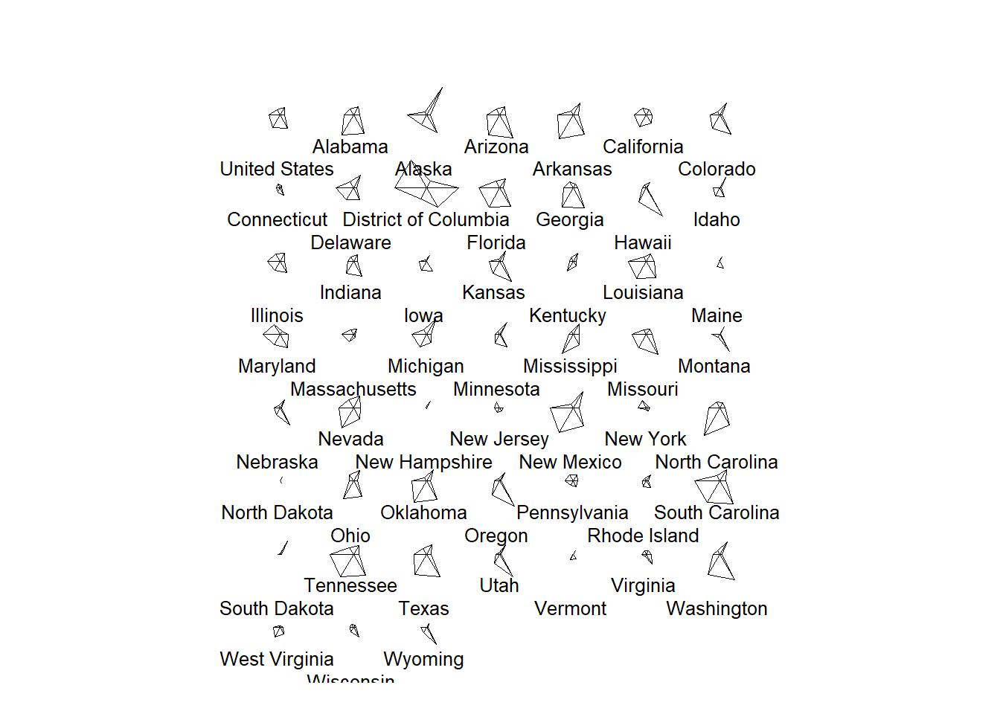
ggplot(Cars93, aes(x=Weight, y=MPG.highway)) +
geom_point(shape=21, colour="black") +
facet_grid(. ~ Type)
ggplot(Cars93, aes(x=Weight, y=MPG.highway)) +
geom_point(shape=21, colour="black") +
facet_grid(Origin ~ Type)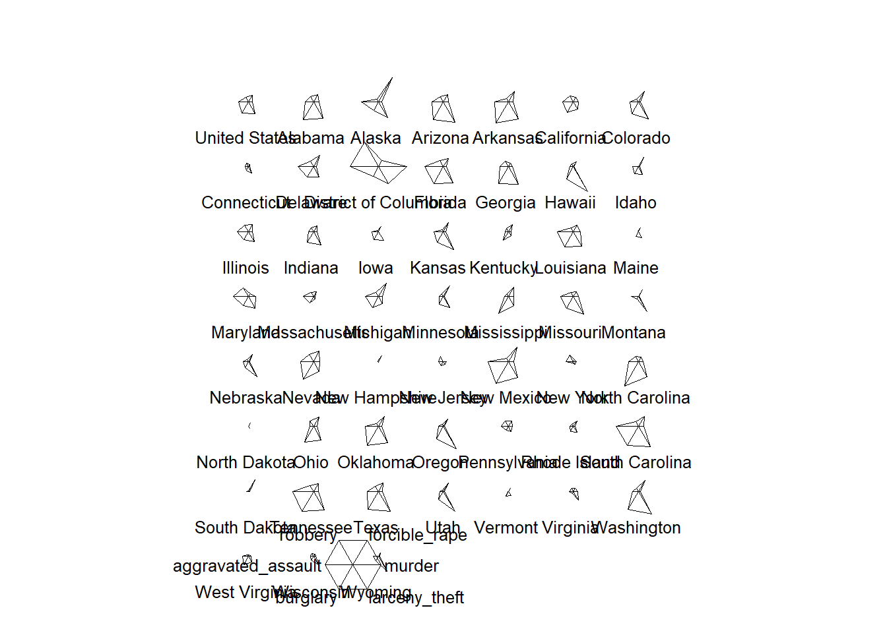
10.2.1.2 facet_wrap()
facet_wrap() 함수는 ncol 또는 nrow 로 행 또는 열의 개수를 분석가가 지정할 수 있어서 좋은 점이 있습니다.
# facet_wrap()
ggplot(Cars93, aes(x=Weight, y=MPG.highway)) +
geom_point(shape=21, colour="black") +
facet_wrap( ~ Type, ncol=3)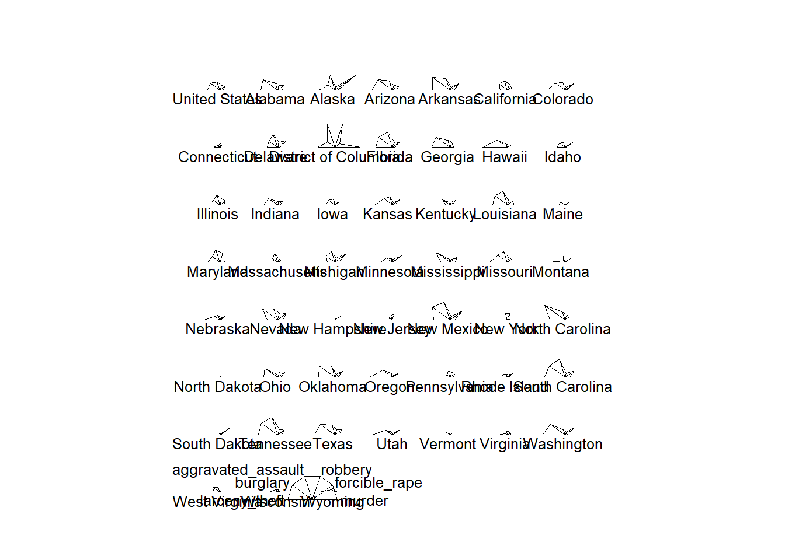
ggplot(Cars93, aes(x=Weight, y=MPG.highway)) +
geom_point(shape=21, colour="black") +
facet_wrap(Origin ~ Type, ncol=3)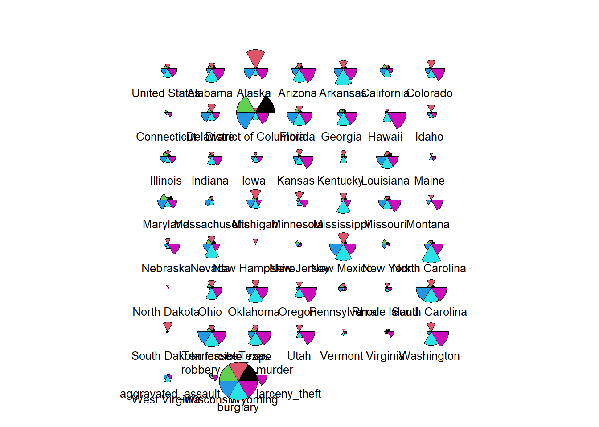
ggplot(Cars93, aes(x=Weight, y=MPG.highway)) +
geom_point(shape=21, colour="black") +
facet_wrap(Origin ~ Type, ncol=2)
10.2.1.3 R ggplot2 분할 면에 각각 주석 넣기 : geom_text()
이전 포스팅에서 하나의 그래프에 텍스트, 선, 화살표, 음영있는 사각형 등으로 부연 설명을 추가하기 위해 annotate() 함수로 주석을 추가하는 방법을 소개하였습니다.
이번에는 facet_grid() 로 특정 범주형 변수에 의해 요인(factor)별로 면 분할된 그래프에 각각 주석을 넣는 넣기 위해 geom_text() 함수를 사용하는 방법에 대해 알아보겠습니다.
예제로 사용할 데이터는 iris 데이터프레임 내 Petal.Width, Petal.Length, Species 의 3개 변수를 사용하겠습니다.
str(iris)## 'data.frame': 150 obs. of 5 variables:
## $ Sepal.Length: num 5.1 4.9 4.7 4.6 5 5.4 4.6 5 4.4 4.9 ...
## $ Sepal.Width : num 3.5 3 3.2 3.1 3.6 3.9 3.4 3.4 2.9 3.1 ...
## $ Petal.Length: num 1.4 1.4 1.3 1.5 1.4 1.7 1.4 1.5 1.4 1.5 ...
## $ Petal.Width : num 0.2 0.2 0.2 0.2 0.2 0.4 0.3 0.2 0.2 0.1 ...
## $ Species : Factor w/ 3 levels "setosa","versicolor",..: 1 1 1 1 1 1 1 1 1 1 ...ggplot2는 별도의 설치 및 호출이 필요한 패키지이므로 아래의 절차를 먼저 따르기 바랍니다.
# install.packages("ggplot2")
library(ggplot2)먼저, 지난번 포스팅에서 소개드렸던, 하나의 화면에 품종별로 색깔을 구분해서 그리고, annotate() 함수를 사용해서 텍스트 주석(text annotation) 하는 방법을 아래에 복습해 보겠습니다.
# 하나의 화면에 품종별로 색깔 구분해서 그리기 : aes(fill=categorical var)
a1 <- ggplot(iris, aes(x=Petal.Width, y=Petal.Length, fill=Species)) +
geom_point(colour="grey", shape=21, size=6) +
scale_fill_brewer(palette="Reds") +
annotate("text", x=0.25, y=2.4, label="Setosa", size=7) + # text annotation
annotate("text", x=1.3, y=3.3, label="Versicolor", size=7) +
annotate("text", x=1.7, y=6.8, label="Virginica", size=7)
a1
이걸 품종(Species)을 기준으로 면 분할 (facet_grid(.~Species)) 하면 아래와 같습니다. 이번 포스팅에서는 아래 처럼 면 분할 된 상태의 그래프에 주석 추가하는 방법입니다.
# 품종별로 면 분할하여 색깔 구분없이 그리기 : facet_grid(.~categorical var)
g1 <- ggplot(iris, aes(x=Petal.Width, y=Petal.Length)) +
geom_point(colour="blue", shape=19, size=4) +
facet_grid(.~Species)
g1
범주형 변수의 요인(factor)별로 면 분할된 상태의 그래프에 텍스트 주석을 넣으려고 아래와 같이 하면 라벨 길이가 다르다면서 에러가 납니다.
# 텍스트 라벨 넣으려면 에러 발생
# Error: Incompatible lengths for set aesthetics: label
g1 +
annotate("text", x=1, y=7, label=c("Setosa", "Versicolor", "Virginica"))## Error: Aesthetics must be either length 1 or the same as the data (9): label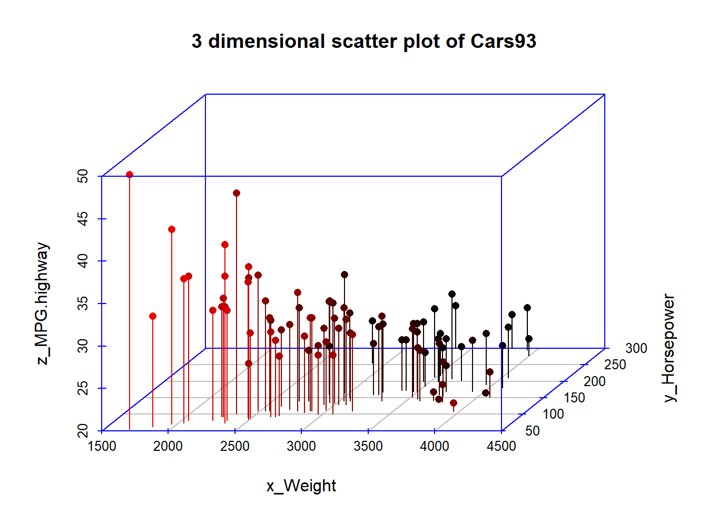
범주형 변수의 요인(factor)별로 면 분할된 상태의 그래프에 텍스트 주석을 넣으려고 하려면 annotate() 함수로는 안되구요, 라벨을 넣으려는 내용을 데이터프레임으로 미리 만들어놓고 geom_text()로 라벨을 집어넣어야 합니다. 아래 예제는 Species 이름을 각 각 텍스트로 넣어보는 예입니다.
# 분할 면마다 각각 텍스트 주석 넣기 : geom_text()
# dataframe of label
iris_species_labels <- data.frame(Species = c("setosa", "versicolor", "virginica"),
label = c("Species=Setosa", "Species=Versicolor", "Species=Virginica"))
g2 <- g1 + geom_text(x=1, y=6.5,
aes(label=label), data=iris_species_labels)
g2
다음으로 각 품종(Species)별로 x축 Petal.Width와 y축 Petal.Length 평균을 구해서 중심 좌표 (centroid)를 텍스트로 주석을 추가해보겠습니다.
먼저, sqldf 패키지를 새로 설치해서 x축 Petal.Width와 y축 Petal.Length 평균을 구해보겠습니다.
# install.packages("sqldf")
library(sqldf)
mean_iris <- sqldf('select "Species",
avg("Petal.Width") as "mean_Petal.Width",
avg("Petal.Length") as "mean_Petal.Length"
from iris group by Species order by Species')
mean_iris## Species mean_Petal.Width mean_Petal.Length
## 1 setosa 0.25 1.5
## 2 versicolor 1.33 4.3
## 3 virginica 2.03 5.6label_mean_iris <- transform(mean_iris,
centroid=paste(c("centroid("),
round(mean_Petal.Width, 2),
c(", "),
round(mean_Petal.Length, 2),
c(")"),
sep=""))
label_mean_iris## Species mean_Petal.Width mean_Petal.Length centroid
## 1 setosa 0.25 1.5 centroid(0.25, 1.46)
## 2 versicolor 1.33 4.3 centroid(1.33, 4.26)
## 3 virginica 2.03 5.6 centroid(2.03, 5.55)다음으로 centroid 정보를 그래프에 분할된 면에 따라 각각 추가해보겠습니다.
# x, y 평균 좌표 추가 : geom_text()
g3 <- g2 +
geom_text(x=1, y=6, aes(label=centroid), data=label_mean_iris)
g3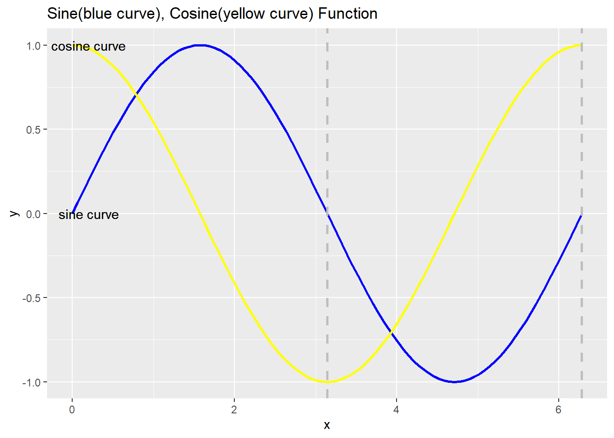
10.2.2 R ggplot2 x축, y축 설정 : coord_fixed(), scale_x_continuous(), scale_y_continuous()
ggplot2 그래프를 그렸을 때 x축이나 y축의 디폴트 값을 사용해도 무리가 없는 경우가 많기는 합니다만, 분석가가 x축이나 y축을 좀더 사용하는 목적에 맞게 설정을 조정하고 싶을 때가 있습니다.
이때 사용할 수 있는 ggplot2의 함수 3가지를 알아보도록 하겠습니다.
(1) 1:1 의 비율로 x축과 y축 설정 : coord_fixed()
(2) 일정한 간격으로 x축, y축 설정 : scale_x_continuous(breaks=seq())
(3) 분석가 마음대로 x축, y축 설정 : scale_x_continuous(breaks=c())
예제로 사용할 데이터는 MASS 패키지에 내장되어 있는 Cars93 데이터 프레임의 도시연비(MPG.city), 고속도로연비(MPG.highway)가 되겠습니다. scale이 연비로서 서로 같은 변수를 선택하였으며, 산포도를 그려보면서 x축, y축 설정을 바꿔보도록 하겠습니다.
library(MASS)
str(Cars93)## 'data.frame': 93 obs. of 27 variables:
## $ Manufacturer : Factor w/ 32 levels "Acura","Audi",..: 1 1 2 2 3 4 4 4 4 5 ...
## $ Model : Factor w/ 93 levels "100","190E","240",..: 49 56 9 1 6 24 54 74 73 35 ...
## $ Type : Factor w/ 6 levels "Compact","Large",..: 4 3 1 3 3 3 2 2 3 2 ...
## $ Min.Price : num 12.9 29.2 25.9 30.8 23.7 14.2 19.9 22.6 26.3 33 ...
## $ Price : num 15.9 33.9 29.1 37.7 30 15.7 20.8 23.7 26.3 34.7 ...
## $ Max.Price : num 18.8 38.7 32.3 44.6 36.2 17.3 21.7 24.9 26.3 36.3 ...
## $ MPG.city : int 25 18 20 19 22 22 19 16 19 16 ...
## $ MPG.highway : int 31 25 26 26 30 31 28 25 27 25 ...
## $ AirBags : Factor w/ 3 levels "Driver & Passenger",..: 3 1 2 1 2 2 2 2 2 2 ...
## $ DriveTrain : Factor w/ 3 levels "4WD","Front",..: 2 2 2 2 3 2 2 3 2 2 ...
## $ Cylinders : Factor w/ 6 levels "3","4","5","6",..: 2 4 4 4 2 2 4 4 4 5 ...
## $ EngineSize : num 1.8 3.2 2.8 2.8 3.5 2.2 3.8 5.7 3.8 4.9 ...
## $ Horsepower : int 140 200 172 172 208 110 170 180 170 200 ...
## $ RPM : int 6300 5500 5500 5500 5700 5200 4800 4000 4800 4100 ...
## $ Rev.per.mile : int 2890 2335 2280 2535 2545 2565 1570 1320 1690 1510 ...
## $ Man.trans.avail : Factor w/ 2 levels "No","Yes": 2 2 2 2 2 1 1 1 1 1 ...
## $ Fuel.tank.capacity: num 13.2 18 16.9 21.1 21.1 16.4 18 23 18.8 18 ...
## $ Passengers : int 5 5 5 6 4 6 6 6 5 6 ...
## $ Length : int 177 195 180 193 186 189 200 216 198 206 ...
## $ Wheelbase : int 102 115 102 106 109 105 111 116 108 114 ...
## $ Width : int 68 71 67 70 69 69 74 78 73 73 ...
## $ Turn.circle : int 37 38 37 37 39 41 42 45 41 43 ...
## $ Rear.seat.room : num 26.5 30 28 31 27 28 30.5 30.5 26.5 35 ...
## $ Luggage.room : int 11 15 14 17 13 16 17 21 14 18 ...
## $ Weight : int 2705 3560 3375 3405 3640 2880 3470 4105 3495 3620 ...
## $ Origin : Factor w/ 2 levels "USA","non-USA": 2 2 2 2 2 1 1 1 1 1 ...
## $ Make : Factor w/ 93 levels "Acura Integra",..: 1 2 4 3 5 6 7 9 8 10 ...ggplot2는 신규 설치 및 호출이 필요한 패키지이므로 아래와 같은 사전 절차가 필요합니다.
# ggplot2 설치 및 호출
# install.packages("ggplot2")
library(ggplot2) 순서대로 하나씩 살펴보겠습니다. 함수 옵션을 바꿔줌에 따라서 x축, y축 결과가 어떻게 바뀌는지 살펴보시고, 필요로 하는 함수 옵션을 선택해서 사용하시면 되겠습니다.
10.2.2.1 Default setting
# default setting of x and y axis
ggplot(Cars93, aes(x=MPG.city, y=MPG.highway)) +
geom_point(shape=21, colour="black", size=3) +
ggtitle("default setting of x and y axis")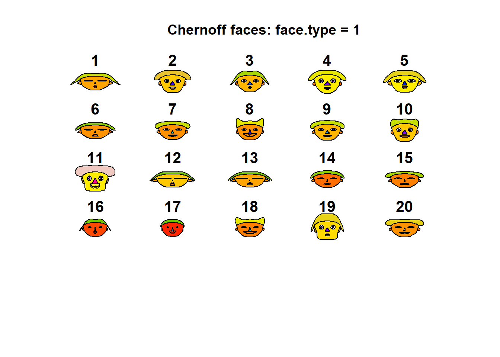
10.2.2.2 1:1 의 비율로 x축과 y축 설정 : coord_fixed()
# 1:1 proportion of x and y axis : coord_fixed()
ggplot(Cars93, aes(x=MPG.city, y=MPG.highway)) +
geom_point(shape=21, colour="black", size=3) +
coord_fixed() +
ggtitle("1:1 proportion of x and y axis : coord_fixed()")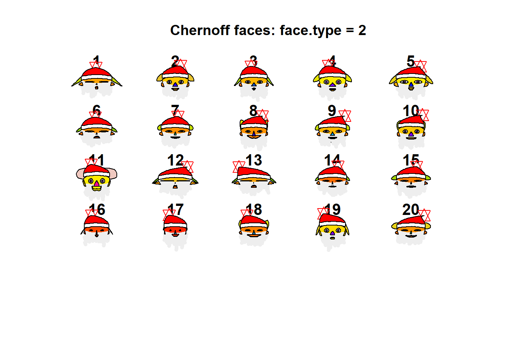
10.2.2.3 일정한 간격으로 x축과 y축 설정 : scale_x_continuous(breaks=seq())
# manual setting with fixed interval of x and y axis : scale_x_continuous(breaks=seq())
ggplot(Cars93, aes(x=MPG.city, y=MPG.highway)) +
geom_point(shape=21, colour="black", size=3) +
coord_fixed() +
scale_x_continuous(breaks=seq(0, 80, 5)) +
scale_y_continuous(breaks=seq(0, 80, 5)) +
ggtitle("manual setting with fixed interval of x and y axis : scale_x_continuous(breaks=seq())")
10.2.2.4 분석가 마음대로 x축과 y축 설정 : scale_x_continuous(breaks=c())
# manual setting of x and y axis : scale_x_continuous(breaks=c())
ggplot(Cars93, aes(x=MPG.city, y=MPG.highway)) +
geom_point(shape=21, colour="black", size=3) +
coord_fixed() +
scale_x_continuous(breaks=c(10, 15, 20, 25, 30, 40)) +
scale_y_continuous(breaks=c(20, 25, 30, 40, 50)) +
ggtitle("manual setting of x and y axis : scale_x_continuous(breaks=c())")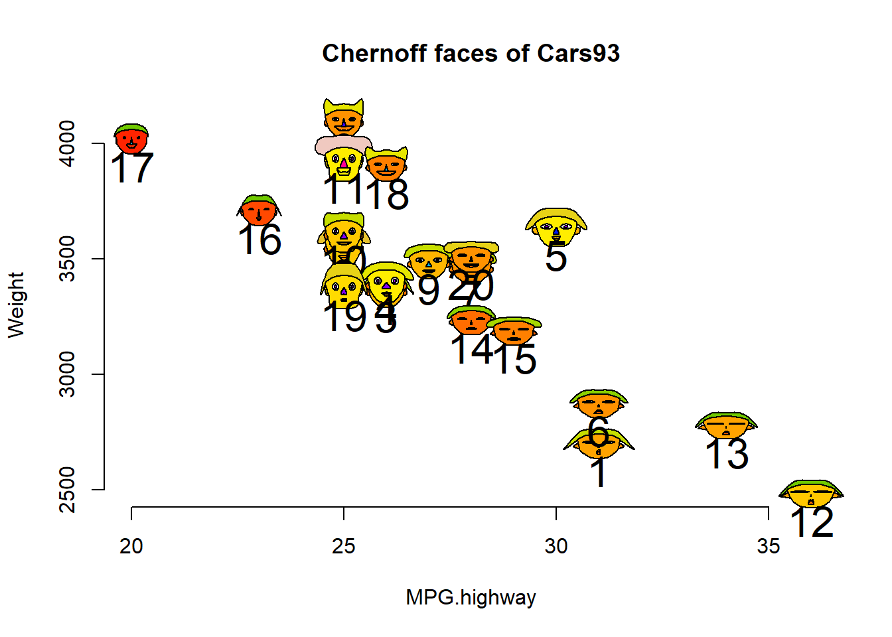
함수 옵션을 바꿔줌에 따라서 x축, y축 결과가 어떻게 바뀌는지 살펴보시고, 필요로 하는 함수 옵션을 선택해서 사용하시면 되겠습니다.
10.2.3 R ggplot2 그래프 색깔 설정 (colour setting)
이번 포스팅에서는 R ggplot2에서 그래프 색깔 설정 (colour setting), 조절하는 방법에 대해서 알아보겠습니다. 이전의 각 그래프 종류별로 소개한 내용에도 색깔 지정에 대한 내용이 조금씩 포함되어 있기는 합니다만, 이번 포스팅에서는 색깔 설정에 대한 경우의 수를 종합적으로 포괄해서 정리를 해보았습니다.
그래프에서 색깔을 특정 변수의 변화와 align하게 되면 x축과 y축의 2차원에 색깔이라는 차원을 추가함으로써 3차원의 정보를 제공할 수 있습니다. 회사 업무 보고서에 엑셀로 그린 그래프를 많이 사용하고는 하는데요, x축과 y축의 2차원을 넘어서는, 특정 조건에 따라서 색깔이나 모양을 달리해야 하는 경우라면 엑셀로 그래프를 그리는 것이 거의 불가능하게 됩니다. 이때 R이 데이터 전처리/변환부터 해서 인쇄용으로 바로 사용해도 좋을 만큼의 고품질의 그래프를 그리는데 아주 특출난 역할을 할 수 있습니다. R 그래프에서 색깔을 자유자재로 사용할 수 있다면 미적으로도 보기에 좋겠지요?!
이번 예제에서 사용할 데이터는 MASS 패키지에 내장되어 있는 Cars93 데이터 프레임의 차 무게(Weight)와 고속도로연비(MPG.highway), 차 가격(Price), 실린더 개수(Cylinders)의 4개 변수를 사용하겠습니다.
library(MASS)
str(Cars93)## 'data.frame': 93 obs. of 27 variables:
## $ Manufacturer : Factor w/ 32 levels "Acura","Audi",..: 1 1 2 2 3 4 4 4 4 5 ...
## $ Model : Factor w/ 93 levels "100","190E","240",..: 49 56 9 1 6 24 54 74 73 35 ...
## $ Type : Factor w/ 6 levels "Compact","Large",..: 4 3 1 3 3 3 2 2 3 2 ...
## $ Min.Price : num 12.9 29.2 25.9 30.8 23.7 14.2 19.9 22.6 26.3 33 ...
## $ Price : num 15.9 33.9 29.1 37.7 30 15.7 20.8 23.7 26.3 34.7 ...
## $ Max.Price : num 18.8 38.7 32.3 44.6 36.2 17.3 21.7 24.9 26.3 36.3 ...
## $ MPG.city : int 25 18 20 19 22 22 19 16 19 16 ...
## $ MPG.highway : int 31 25 26 26 30 31 28 25 27 25 ...
## $ AirBags : Factor w/ 3 levels "Driver & Passenger",..: 3 1 2 1 2 2 2 2 2 2 ...
## $ DriveTrain : Factor w/ 3 levels "4WD","Front",..: 2 2 2 2 3 2 2 3 2 2 ...
## $ Cylinders : Factor w/ 6 levels "3","4","5","6",..: 2 4 4 4 2 2 4 4 4 5 ...
## $ EngineSize : num 1.8 3.2 2.8 2.8 3.5 2.2 3.8 5.7 3.8 4.9 ...
## $ Horsepower : int 140 200 172 172 208 110 170 180 170 200 ...
## $ RPM : int 6300 5500 5500 5500 5700 5200 4800 4000 4800 4100 ...
## $ Rev.per.mile : int 2890 2335 2280 2535 2545 2565 1570 1320 1690 1510 ...
## $ Man.trans.avail : Factor w/ 2 levels "No","Yes": 2 2 2 2 2 1 1 1 1 1 ...
## $ Fuel.tank.capacity: num 13.2 18 16.9 21.1 21.1 16.4 18 23 18.8 18 ...
## $ Passengers : int 5 5 5 6 4 6 6 6 5 6 ...
## $ Length : int 177 195 180 193 186 189 200 216 198 206 ...
## $ Wheelbase : int 102 115 102 106 109 105 111 116 108 114 ...
## $ Width : int 68 71 67 70 69 69 74 78 73 73 ...
## $ Turn.circle : int 37 38 37 37 39 41 42 45 41 43 ...
## $ Rear.seat.room : num 26.5 30 28 31 27 28 30.5 30.5 26.5 35 ...
## $ Luggage.room : int 11 15 14 17 13 16 17 21 14 18 ...
## $ Weight : int 2705 3560 3375 3405 3640 2880 3470 4105 3495 3620 ...
## $ Origin : Factor w/ 2 levels "USA","non-USA": 2 2 2 2 2 1 1 1 1 1 ...
## $ Make : Factor w/ 93 levels "Acura Integra",..: 1 2 4 3 5 6 7 9 8 10 ...ggplot2 패키지는 별도의 설치 및 호출이 필요하므로 아래의 절차를 먼저 시행합니다.
# install.packages("ggplot2") # 설치
library(ggplot2) 색상 변화를 잘 살펴볼 수 있도록 속이 빈 동그라미 모양인 shape=21 번의 도형을 사용해서 size=6 으로 큼지막하게 키워서 예를 들어보겠습니다.
10.2.3.1 색깔 설정을 별도로 하지 않은 경우 디폴트 테두리 검정색 (default colour)
# default colour
ggplot(Cars93, aes(x=Weight, y=MPG.highway)) +
geom_point(shape=21, size=6)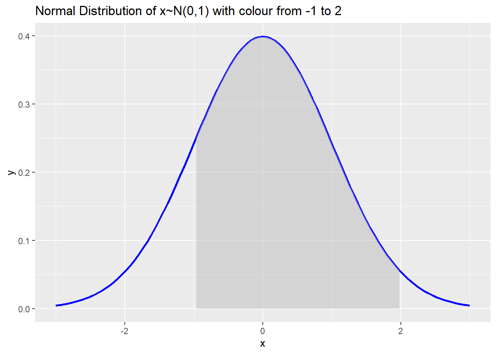
10.2.3.2 테두리 선 색깔 지정 (colour : line colour setting)
# 테두리 선 색깔 지정 (colour : line colour setting)
ggplot(Cars93, aes(x=Weight, y=MPG.highway)) +
geom_point(shape=21, size=6, colour="blue")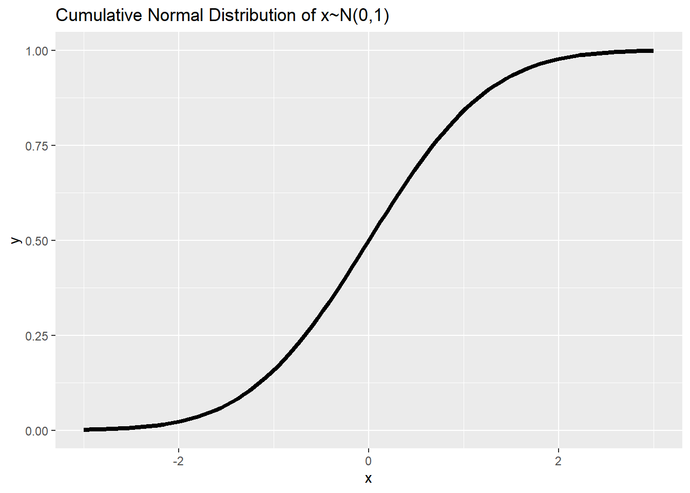
10.2.3.3 도형의 속 채우기 색깔 지정 (fill : innner colour fill-up)
# 도형의 속 채우기 색깔 (fill : inner colour fill-up)
ggplot(Cars93, aes(x=Weight, y=MPG.highway)) +
geom_point(shape=21, size=6, fill="blue")10.2.3.4 연속형 변수의 숫자에 따른 색깔 조절 : aes(fill=continuous variable)
# 연속형 변수의 숫자에 따른 색깔 조절
# (fill : colour change aligned with continuous numeric variable)
ggplot(Cars93, aes(x=Weight, y=MPG.highway, fill=Price)) +
geom_point(colour="grey", shape=21, size=6)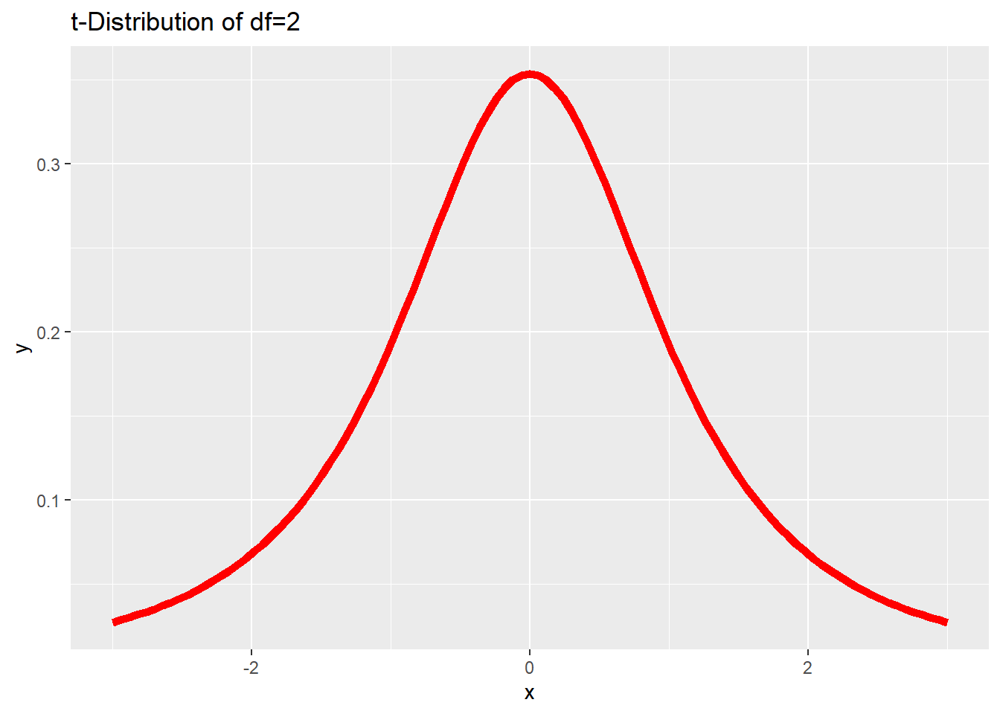
10.2.3.5 범주형 변수의 범주/요인(factor)에 따른 색깔 조절 : aes(fill=categorical variable)
# 범주형 변수의 범주/요인(factor) 따른 색깔 조절
# (fill : colour change aligned with categorical variable)
ggplot(Cars93, aes(x=Weight, y=MPG.highway, fill=Cylinders)) +
geom_point(colour="grey", shape=21, size=6)10.2.3.6 Palette = Oranges 색 설정 (pallet colour setting) : scale_fill_brewer()
palette 설정은 범주형 데이터 (categorical data)에만 해당됩니다.
# Palette = Oranges 색 설정 (palette colour setting) : scale_fill_brewer()
ggplot(Cars93, aes(x=Weight, y=MPG.highway, fill=Cylinders)) +
geom_point(colour="grey", shape=21, size=6) +
scale_fill_brewer(palette="Oranges") # Oranges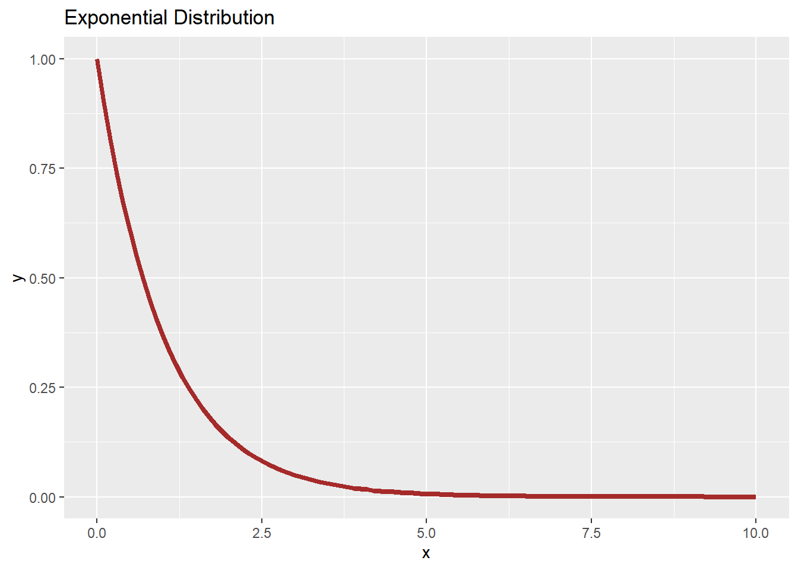
10.2.3.7 Palette = Reds 색 설정 (pallet colour setting) : scale_fill_brewer()
# Palette = Reds 색 설정 (palette colour setting) : scale_fill_brewer()
ggplot(Cars93, aes(x=Weight, y=MPG.highway, fill=Cylinders)) +
geom_point(colour="grey", shape=21, size=6) +
scale_fill_brewer(palette="Reds") # Reds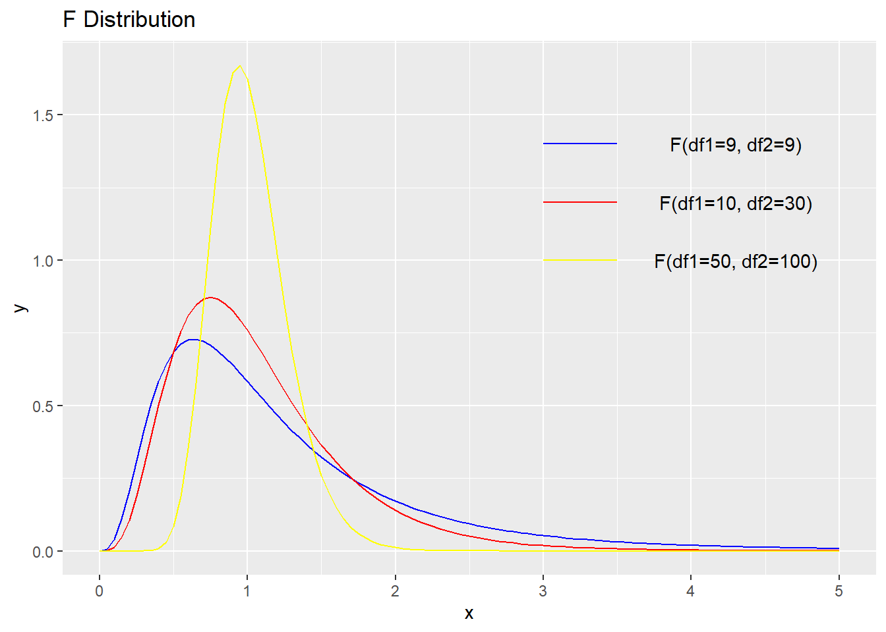
10.2.3.8 Palette = Blues 색 설정 (pallet colour setting) : scale_fill_brewer()
# Palette = Blues 색 설정 (palette colour setting) : scale_fill_brewer()
ggplot(Cars93, aes(x=Weight, y=MPG.highway, fill=Cylinders)) +
geom_point(colour="grey", shape=21, size=6) +
scale_fill_brewer(palette="Blues") # Blues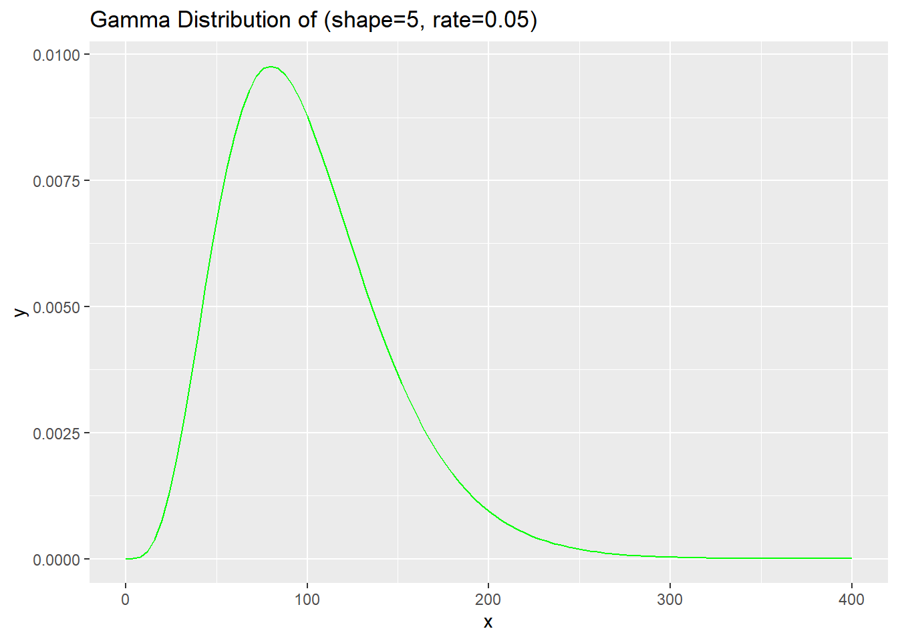
10.2.4 R ggplot2 텍스트(text), 선(line), 화살표(arrow), 음영사각형(shadowed box), 제목(title) 주석달기 : annotate()
R로 그래프를 그렸다면, 보는 이의 가독성, 해석의 용이성을 높여주기 위해서 그래프 위에 텍스트, 가로선/세로선/대각선, 화살표, 음영 사각형, 제목 등과 같이 추가로 정보를 제공하거나 강조를 하고 싶은 부분에 주석을 달고 싶을 때가 있습니다.
- 텍스트 :
annotate("text") - 가로선/세로선/대각선 :
geom_vline(),geom_hline(),geom_abline() - 화살표 :
annotate("segment", arrow=arrow()), withgridpackage - 음영 사각형 :
annotate("rect") - 제목 :
ggtitle()
매번의 R 그래프/시각화 포스팅마다 주석 다는 방법을 간간이 곁들여서 소개해드리기는 했는데요, 이번 포스팅에서는 주석 다는 방법에 대해서 포괄적이고 종합적으로 정리를 해서 바로 찾아보기 편하도록 정리를 해보았습니다.
예제로 사용할 데이터는 Base Package에 내장되어 있는 iris 데이터 프레임의 Petal.Width, Petal.Length, Species의 세개 변수를 사용하겠습니다. (iris 데이터셋은 데이터 마이닝 실습에 아주 많이 사용되는 데이터셋으로서, iris 꽃 품종 중 setosa 50개, versicolor 50개, virginica50개를 꽃잎의 넓이와 길이를 측정해놓은 데이터셋입니다)
str(iris)## 'data.frame': 150 obs. of 5 variables:
## $ Sepal.Length: num 5.1 4.9 4.7 4.6 5 5.4 4.6 5 4.4 4.9 ...
## $ Sepal.Width : num 3.5 3 3.2 3.1 3.6 3.9 3.4 3.4 2.9 3.1 ...
## $ Petal.Length: num 1.4 1.4 1.3 1.5 1.4 1.7 1.4 1.5 1.4 1.5 ...
## $ Petal.Width : num 0.2 0.2 0.2 0.2 0.2 0.4 0.3 0.2 0.2 0.1 ...
## $ Species : Factor w/ 3 levels "setosa","versicolor",..: 1 1 1 1 1 1 1 1 1 1 ...ggplot2는 별도의 설치 및 호출이 필요한 패키지이므로 아래의 절차를 먼저 실행하시기 바랍니다.
# install.packages("ggplot2")
library(ggplot2)